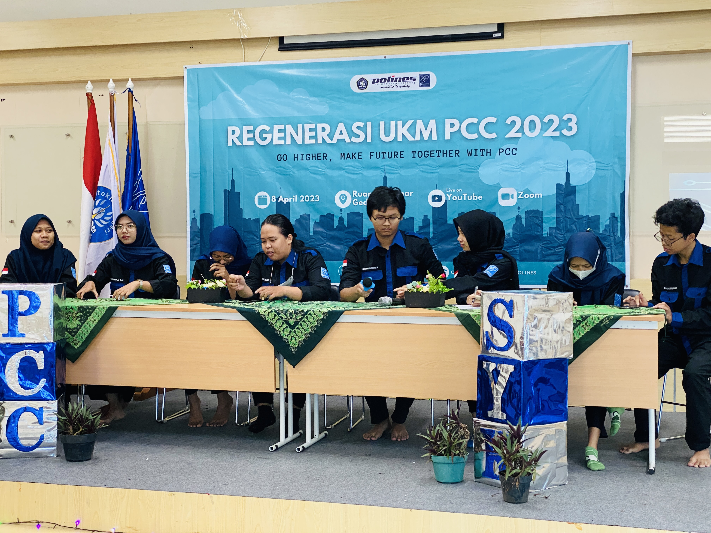

Sertijab
Melantik pengurus UKM PCC yang baru yang sebelumnya merupakan Anggota Aktif yang telah lolos melalui tahapan seleksi dari HRD dan Tim Formatur serta atas kebijakan dari Administrator dan melepas jabatan Pengurus UKM PCC yang telah selesai masa jabatannya sesuai dengan kesepakatan Anggaran Dasar.

Temu Awal
Temu Awal merupakan acara yang diadakan Pertama kali untuk mempertemukan seluruh anggota Pengurus UKM PCC lama dengan Anggota Pengurus yang baru. tujuannya supaya antar anggota Pengurus UKM PCC saling mengenal satu sama lain.

Sidum & Raker
Sidum dilaksanakan dengan tujuan membahas dan menetapkan AD/ART UKM PCC untuk satu tahun periode, sementara Raker dilaksanakan untuk menetapkan seluruh kegiatan selama satu tahun kepengurusan UKM PCC beserta seluruh anggota kepanitiaan dan tujuan yang ingin dicapai.

Cakra
Cakra Adalah Acara yang diadakan bertujuan untuk memperkenalkan UKM PCC kepada Para Mahasiswa Baru supaya Mahasiswa Baru bahwa UKM PCC adalah UKM yang Bergerak dibidang IT. serta memperkenalkan apa yang terdapat didalam UKM PCC

Makrab
Makrab bertujuan untuk menciptakan rasa kekeluargaan dan menjalin kerukunan antar pengurus UKM PCC,serta membuat para pengurus untuk saling mengenal satu sama lain.

Open House
Techcomfest adalah salah satu wujud misi dan peran aktif UKM Polytechnic Computer Club dalam mengikuti perkembangan teknologi dalam bidang IT. Dengan diadakannya kegiatan Techcomfest, diharapkan siswa/i SMA/SMK sederajat dan Mahasiswa/i tingkat nasional dapat menyalurkan inovasi dan kreativitas mereka khususnya dalam bidang teknologi dan informasi.

HUT PCC
Techcomfest adalah salah satu wujud misi dan peran aktif UKM Polytechnic Computer Club dalam mengikuti perkembangan teknologi dalam bidang IT. Dengan diadakannya kegiatan Techcomfest, diharapkan siswa/i SMA/SMK sederajat dan Mahasiswa/i tingkat nasional dapat menyalurkan inovasi dan kreativitas mereka khususnya dalam bidang teknologi dan informasi.

Pendas & PAB
Techcomfest adalah salah satu wujud misi dan peran aktif UKM Polytechnic Computer Club dalam mengikuti perkembangan teknologi dalam bidang IT. Dengan diadakannya kegiatan Techcomfest, diharapkan siswa/i SMA/SMK sederajat dan Mahasiswa/i tingkat nasional dapat menyalurkan inovasi dan kreativitas mereka khususnya dalam bidang teknologi dan informasi.
